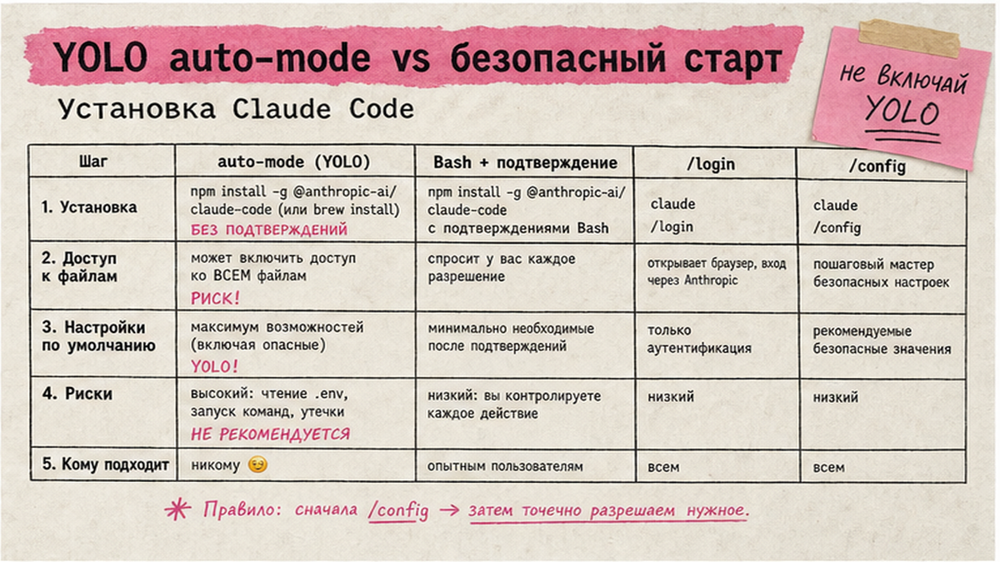
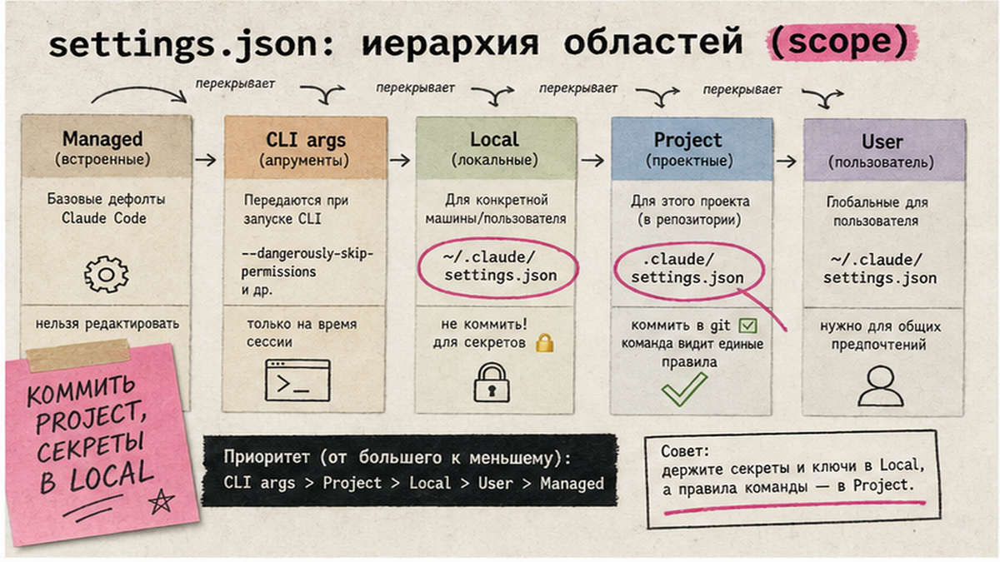
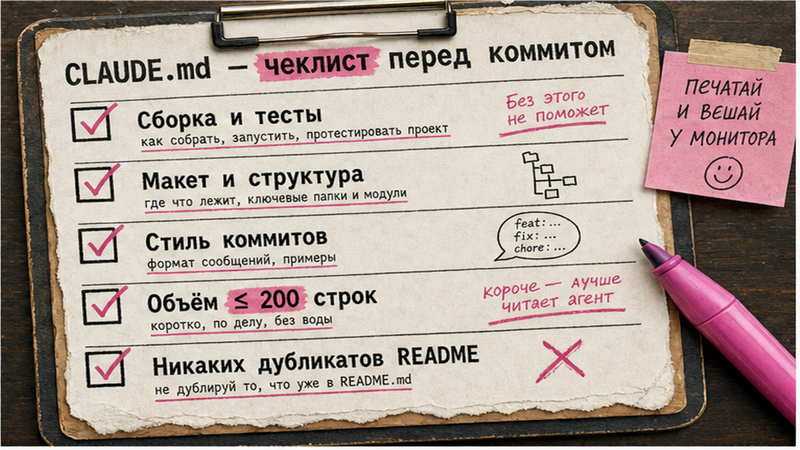

Claude Code правит код и запускает команды в терминале, но из коробки не знает правил вашего репозитория и не блокирует чтение секретов из .env. Настройка claude code через settings.json, CLAUDE.md и hooks занимает 45-60 минут. Ниже - установка CLI, три guardrails-хука, permissions и проверка через /hooks. Вы соберете командный сетап в .claude/ и пройдете чек-лист из 15 пунктов перед продакшеном.
TL;DR / Быстрый инсайт: Claude Code настраивается через settings.json (permissions, hooks) и CLAUDE.md (договоренности с агентом). Hooks - скрипты на события, которые выполняются всегда; смотрите их в /hooks. CLAUDE.md объясняет стиль, hooks и permissions блокируют опасные действия. При сбое - claude --safe-mode или claude doctor.
Claude Code - агент Anthropic для терминала, IDE и desktop: читает кодовую базу, редактирует файлы, запускает bash-команды (официальное описание). MCP (Model Context Protocol) - открытый стандарт "розеток" для внешних сервисов; в Claude Code конфиг лежит в .mcp.json и дополняет hooks, но не заменяет guardrails. Связка с MCP в Cursor и n8n-агентами: Claude Code - интерактивная работа в репозитории, n8n и Make - фоновые сценарии по расписанию и webhook.
Метафора: CLAUDE.md - договор с агентом; hooks - охранник (скрипт срабатывает всегда). Permissions - список allow/deny до вызова tool.

Claude Code входит в Pro (от $17/мес при годовой подписке) и Max - цены на дату публикации, см. claude.com. Доступ зависит от региона и аккаунта.
Делайте: фиксируйте версию CLI в README. Не делайте: YOLO без hooks и deny - агент прочитает секреты.

Конфиг - settings.json с иерархией scope (документация). Приоритет: Managed - CLI args - Local - Project - User.
| Уровень | Путь | Когда использовать |
|---|---|---|
| User | ~/.claude/settings.json | Личные defaults |
| Project | .claude/settings.json | Hooks и permissions команды в Git |
| Local | .claude/settings.local.json | Overrides без коммита (.gitignore) |
| Managed | /etc/claude-code/managed-settings.json | Корпоративные политики IT |
Workflow:
install + /login → .claude/settings.json → CLAUDE.md → hooks → /hooks → тест prompt → чек-лист 15 пунктов
Добавьте $schema и permissions:
Пример settings.json:
{ "$schema": "https://json.schemastore.org/claude-code-settings.json", "permissions": { "allow": ["Bash(npm run lint)", "Bash(npm test)"], "deny": ["Read(./.env)", "Read(./secrets/**)"] } }
Изменения permissions, hooks и apiKeyHelper подхватываются без перезапуска - срабатывает hook ConfigChange. Ключи model и outputStyle читаются при старте сессии; в процессе работы смените модель через /model. Claude Code хранит до 5 резервных копий settings с timestamp - откатите битый JSON, если claude doctor ругается на синтаксис.
Делайте: коммитьте project settings, секреты в local. Не делайте: flat-map hooks из старых гайдов - невалидно (issue #18960).

CLAUDE.md - build/test, layout, стиль коммитов. Пути: ~/.claude/CLAUDE.md, CLAUDE.md в корне или .claude/CLAUDE.md, CLAUDE.local.md для личного.
Пример CLAUDE.md:
# Проект
## Сборка: npm install && npm test
## Стиль: Conventional Commits
## Не трогать migrations/ без запроса
Модель может "забыть" длинный CLAUDE.md; запреты (.env, push в main) - в hooks и permissions.
Делайте: 15-25 строк, команды одной строкой. Не делайте: 200 строк правил - съедают контекст без гарантии исполнения.
Hooks - shell/HTTP/MCP/prompt/agent на lifecycle (справочник). Схема: событие → matcher-группы → handlers с "type": "command". Exit 2 блокирует PreToolUse; /hooks - только просмотр.
Пример hooks в settings.json:
"hooks": { "PostToolUse": [{ "matcher": "Edit|Write", "hooks": [{ "type": "command", "command": "npx prettier --write \"$CLAUDE_PROJECT_DIR\"/**/*.ts 2>/dev/null || true" }] }], "PreToolUse": [{ "matcher": "Read", "hooks": [{ "type": "command", "command": "if echo \"$TOOL_INPUT\" | grep -qE '\\.env|secrets/'; then exit 2; fi" }] }], "Notification": [{ "matcher": "", "hooks": [{ "type": "command", "command": "notify-send 'Claude Code' 'Needs input'" }] }] }
PostToolUse запускает prettier или ruff/black после каждого Edit|Write - код остается единообразным без ручного lint. PreToolUse Read с exit 2 возвращает JSON deny и блокирует чтение .env и secrets/. Notification hook шлет notify-send на Linux; на macOS замените command на osascript -e 'display notification ...'. Пять типов handler: command, http, mcp_tool, prompt, agent - для старта хватит command. Timeout: 600 с для command, 30 с для prompt.
Делайте: nested массив matcher + "type": "command". Не делайте: только CLAUDE.md для секретов - hook детерминирован.
Примеры permissions из документации: "allow": ["Bash(npm run lint)", "Bash(npm test)"], "deny": ["Read(./.env)", "Read(./secrets/**)"]. Расширьте deny опасными Bash-паттернами: curl | bash, rm -rf /, git push origin main, если политика команды запрещает прямой push в main. Auto-mode (автозапуск tools без подтверждения) включайте только после рабочих hooks и deny. disableAllHooks: true отключает user/project/local hooks; claude --safe-mode или CLAUDE_CODE_SAFE_MODE=1 полностью изолирует CLAUDE.md, skills, plugins, hooks и MCP (релиз недели 24, июнь 2026).
Делайте: allow lint/test. Не делайте: deny только текстом в CLAUDE.md.
Hook молчит? Nested JSON, matcher, $CLAUDE_PROJECT_DIR, debug log. MCP - .mcp.json (гайд MCP); hooks - lifecycle, MCP - внешние tools.
Делайте: --safe-mode, затем hooks по одному. Не делайте: править через /hooks UI.
На потом: PreToolUse Bash block git push в main, SessionStart с additionalContext - добавьте после базового сетапа, когда три стартовых hook стабильны.
Материал проверен: эксперт Артур Хорошев (CEO Maya AI, практик Make.com и Claude Code).
Достоверность данных: конфиги, hooks и --safe-mode сверены с code.claude.com на июнь 2026; показы Wordstat по "claude code" в Cloud не собирались.
Install script → /login → /config → .claude/settings.json + CLAUDE.md → hooks → /hooks → тест edit и read .env.
~/.claude/settings.json (глобально), .claude/settings.json (репо), .claude/settings.local.json (личное, не коммитить). Local перекрывает project, project - user.
Hooks - скрипты на события, выполняются всегда. CLAUDE.md - текст; модель может не соблюсти. Запреты - hooks + permissions, conventions - CLAUDE.md.
"disableAllHooks": true в settings или claude --safe-mode. Safe-mode отключает CLAUDE.md, skills, hooks и MCP - изоляция битого конфига.
Nested JSON (не flat-map), matcher, exit code, $CLAUDE_PROJECT_DIR. Смотрите /hooks и claude doctor; сверяйте с официальным reference.
Claude Code - терминальный агент Anthropic с settings.json и hooks. Cursor - IDE с .cursor/mcp.json и Skills. Разные сценарии; MCP-идеи переносятся между ними.
Да: build-команды и layout в CLAUDE.md, enforcement в hooks. Не дублируйте hook-логику в markdown.